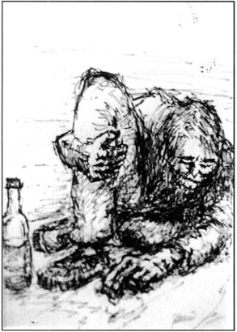

<html>
<head>
<title>The Annotated "Wharf Rat"</title>
</head>
<body>
<i>"I'll get up and fly away...fly away..."</i>

<h2>The <i>Annotated</i> "Wharf Rat"</h2>
An installment in <a href="gdhome.html"> The <i>Annotated</i> 
Grateful Dead Lyrics.</a><br>
By <a href="david.html">David Dodd</a><br>
Research Associate, Music Dept., University of California Santa Cruz
<hr>
<a href="#title"><b>"Wharf Rat"</b></a><br>
Words by Robert Hunter; Music by Jerry Garcia<br>
Copyright Ice Nine Publishing; used by permission.
<p>
<blockquote>
Wharf rat down [<i>sung as</i> Old man down]<br>
way down<br>
down, down by the docks of the city,<br>
Blind and dirty<br>
<a href="#waterfront">asked me for a dime--<br>
dime for a cup of coffee</a><br>
I got no dime but<br>
I got time to hear his story:<br>
<p>
My name is <a href="#august">August West</a><br>
and I love my <a href="#baker">Pearly Baker</a> best<br>
more than my wine<br>
...more than My wine<br>
more than my maker<br>
though he's no friend of mine<br>
<p>
Everyone said<br>
I'd come to no good<br>
I knew I would<br>
Pearly believed <i>them</i><br>
<p>
Half of my life<br>
I spent doin' time for<br>
some other fucker's crime<br>
Other half found me stumbling around<br>
drunk on burgundy wine<br>
<p>
But I'll get back<br>
on my feet someday<br>
The good Lord willing<br>
if He says I may<br>
'cause I know the life I'm<br>
livin's no good<br>
I'll get a new start<br>
live the life I should<br>
<p>
<a href="#fly">I'll get up and fly away</a><br>
I'll get up and<br>
fly away...<br>
...fly away<br>
<p>
Pearly's been true<br>
true to me, true to my dying day he said<br>
I said to him:<br>
I'm sure she's been<br>
I said to him:<br>
I'm sure she's been true to you<br>
<p>
I got up and wandered<br>
Wandered downtown<br>
nowhere to go<br>
just to hang around<br>
I got a girl<br>
named Bonny Lee<br>
I know that girl's been true to me<br>
I know she's been<br>
I'm sure she's been<br>
true to me<br>
</blockquote>
<hr>
<a name="title"><h3>"Wharf Rat"</h3></a>
Hunter has posted a <a href="http://www.dead.net/RobertHunterArchive/files/HandwrittenLyrics/WharfRat.html" target="new">page</a> from the mansucript for "Wharf Rat."
<p>
Recorded on
<ul>
<li><cite><a href="discog2.html#skull">Grateful Dead (Skull and Roses)</a></cite>
<li><cite><a href="discog1.html#dick3">Dick's Picks, Vol. 3</a></cite>
<li><cite><a href="discog2.html#terrapin2">Terrapin Station [Live album]</a></cite>
</ul>
<p>
Covered by 
<ul>
<li><a href="http://www.stevens-tech.edu/~dbelson/oilbase/" target="new">Midnight Oil</a> on 
    <ul>
    <li><cite><a href="tribute.html#deadicated">Deadicated</a></cite>
    <li><cite>Sometimes--Live</cite>
</ul>
<li>Michael Rose on <cite><a href="tribute.html#fire">Fire On the Mountain</a></cite>
</ul>
<p>
First performance: February 18, 1971, at the Capitol Theater in 
Port Chester, NY. "Wharf Rat" appeared in the first set, sandiwched 
between two segments of <a href="darkstar.html">"Dark Star."</a> 
Other firsts in the show included <a href="bert.html">"Bertha,"</a> 
<a href="greatest.html">"Greatest Story Ever Told,"</a> "Johnny B. 
Goode," <a href="lose.html">"Loser,"</a> and <a href="playin.html">"Playing in the Band."</a> It remained in the repertoire thereafter.
<p>
From the <cite><a href="biblio.html#mathews">Dictionary of Americanisms</a></cite>:
<blockquote>
<b>2. Wharf rat,</b>...(b)one who is frequently found on or near wharves, esp. a vagrant or petty criminal who haunts wharves...<b>1836</b><cite>Franklin Repository</cite> (Chambersburg, PA) 4 Oct 1/3 "I've an idea, my man, that you are one of the wharf rats; and, if so, the less lip you
give me the better."
</blockquote>
<p>
Additionally, the Wharf Rats are the name of a group of loosely-organized sober Deadheads,


patterning themselves roughly on the Alcoholics Anonymous model of a twelve-step program to


maintain sobriety in the often slippery atmosphere of a Grateful Dead concert. Their motto is


"One show at a time." They put out a newsletter, and may be reached at:


<blockquote>


P.O. Box 357<br>


Haddon Heights, NJ 08035<br>


</blockquote>
<p>
These notes on a possible overall similarity/influence on the piece from two readers:
<blockquote>
From: David Callaway [mailto:drcallaway@ucdavis.edu]<br>
Sent: Friday, August 08, 2003 1:33 PM<br>
<p>
Hi Mr. Dodd, <br>
<p>
Really love your project.  Have been through many times over the years.  Was reading something today and remembered a link I've always thought of -- Wharf Rat and "The Rhyme of the Ancient Mariner" -- mostly in the narrative device of storytelling.
<p>
Again, thanks for the great tool! 
<p>
David Callaway
</blockquote>
<p>
<blockquote>
From: Bill Parry [mailto:BILLP@digrec.com]<br>
Sent: Friday, October 10, 2003 6:37 AM<br>
<p>


Hi, David.
<p>
Your site is absolutely awesome - keep up the good work, brother.  It is a testimonial to the lasting effect of the Dead on the world that their music continues to inspire such animated discussion seven years after Garcia's unfortunate demise.
<p>
I am writing about Wharf Rat.  Your annotations are excellent, but I am wondering if this thought ever occurred to anyone else.  Hunter is a highly literate person (witness the Dame Edith Sitwell references in China Cat), and the story in this song always struck me as being remarkably similar in context to Samuel Taylor Coleridge's Rime of the Ancient Mariner, the text of which can be found at:
<p>
http://etext.lib.virginia.edu/stc/Coleridge/poems/Rime_Ancient_Mariner.html
<p>
There are certain eerie similarities:  the passerby stopped by a down-and-out character, the wild yet true story of how the unfortunate came to be there, and especially the way in which the passerby is moved by the tale to examine his own life in light of what the down-and-out tells him.
<p>
I probably heard Garcia sing this song 25-30 times at various concerts over the years, and I never failed to be impressed by the similarities between the two stories.  In some ways, you might say that Wharf Rat is an updated telling of a similar story in a different idiom in a different century....
<p>
FWIW -<p>
from the pi Man<p>
<p>

P.S.: Here are the final stanzas of Rime:
<p>
And ever and anon through out his future life an agony constraineth him to travel from land to land ; <br>
Since then, at an uncertain hour,<br>
That agony returns :<br>
And till my ghastly tale is told,<br>
This heart within me burns. <br>
I pass, like night, from land to land ;<br>
I have strange power of speech ;<br>
That moment that his face I see,<br>
I know the man that must hear me :<br>
To him my tale I teach.<br>
<br>
What loud uproar bursts from that door !<br>
The wedding-guests are there :<br>
But in the garden-bower the bride<br>
And bride-maids singing are :<br>
And hark the little vesper bell,<br>
Which biddeth me to prayer !<br>
<br>
O Wedding-Guest ! this soul hath been<br>
Alone on a wide wide sea :<br>
So lonely 'twas, that God himself<br>
Scarce seeméd there to be.<br>
<br>
O sweeter than the marriage-feast,<br>
'Tis sweeter far to me,<br>
To walk together to the kirk<br>
With a goodly company !--<br>
<br>
To walk together to the kirk,<br>
And all together pray,<br>
While each to his great Father bends,<br>
Old men, and babes, and loving friends<br>
And youths and maidens gay !<br>
<br>
And to teach, by his own example, love and reverence to all things that God made and loveth. <br>
Farewell, farewell ! but this I tell<br>
To thee, thou Wedding-Guest !<br>
He prayeth well, who loveth well<br>
Both man and bird and beast. <br>
He prayeth best, who loveth best<br>
All things both great and small ;<br>
For the dear God who loveth us,<br>
He made and loveth all.<br>
<br>
The Mariner, whose eye is bright,<br>
Whose beard with age is hoar,<br>
Is gone : and now the Wedding-Guest<br>
Turned from the bridegroom's door.<br>
<br>
He went like one that hath been stunned,<br>
And is of sense forlorn :<br>
A sadder and a wiser man,<br>
He rose the morrow morn.

</blockquote>


<a name="waterfront"><h3>Asked me for a dime, a dime for a cup of coffee</h3></a>
This note from a reader:
<blockquote>
From: scott matter [mailto:scoma@hotmail.com]<br>
Sent: Saturday, January 11, 2003 8:27 PM<br>
Subject: Wharf Rat note
<p>


Hi David,
<p>
I just watched On the Waterfront (Marlon Brando, dir. by Elia Kazan) and had 
a thought. The line from the first verse of Wharf Rat (asked me for a dime, 
a dime for a cup of coffee) is very similar to lines from a particular scene 
in the movie.
<p>
It's the scene where Terry Malloy is walking from the church with Edie 
(after the union has come to break up a meeting of potential 'rats.' An old 
bum in the park stops the couple and asks them "can you spare a dime? Just a 
dime for a cup of coffee?"
<p>
It seems like Hunter might have had this movie in mind (or part of it 
anyways) when writing Wharf Rat. At least the similarity in this one line is 
interesting.
<p>
take care,
<p>
scott

</blockquote>
<hr>
<a name="august"><h3>August West</h3></a>
Garcia's only known artwork titled after a Grateful Dead song lyric was "August West (Wharf Rat)" measuring 8.5 x 5.75", offered on eBay at $55,000 in November, 2001.
<P>

<p>


<hr>
<h3><a name="baker">Pearly Baker</a></h3>
This note from a reader:
<blockquote>
Date: Tue, 30 Sep 1997 19:56:50 -0700<br>
From: Joyce Kohnke <joycek@innercite.com><br>
Subject: wharf rat
<p>
What's up David.  I wanted to point out the line:<br>
<blockquote>
  I love my Pearly Baker best<br>
  More than my wine<br>
</blockquote>
Back in the era of prohibition, the <a href="http://www.wpl.lib.oh.us/AntiSaloon/leaders/Baker.html" target="new">Rev. Purley Baker</a> was the head of the <a href="http://www.wpl.lib.oh.us/AntiSaloon/" target="new">Anti-Saloon League of America</a>.  This group lead the fight for prohibition in America.  Who knows? Keep up the good work!
<p>
                                Walt K<br>
                                joycek@innercite
</blockquote>
<p>
Well! This is an amazing note. Purley Baker did indeed head up the Anti-Saloon league from 1903 to the early 1920's. In the song, of course, Pearly Baker, with the different spelling, becomes a woman. But the reference has interesting implications for the song's meaning-which, of course, I leave up to you.
<hr>


<h3><a name="august">August West</a></h3>


There is an interesting discussion on the Deadlit conference at the


<a href="http://www.well.com" target="new">WELL</a> (Topic #251) which points up a


possible link to the line in the song <a href="days.html">"Days Between"</a>:


<blockquote>


"Summer flies and August dies<br>


The world grows dark and mean."


</blockquote>


The speculation in this discussion includes the possibility that August


West of "Wharf Rat" is a Garcia personality--since Garcia's birthdate 


was in August. 


<p>


And this note from a reader:


<blockquote>


Subject: Wharf Rat <br>


   Date: 


       Mon, 25 Nov 1996 17:35:35 -0800 <br>


  From: 


       Joe Berentes <berenj@hlthsrc.com><br>


<p>


David,


<p>


I was browsing some of the entries on your page and came across the


discussion regarding the name August West.


<p>


It seems to me this name is symbolic of the derilict's life. August marks


the end of summer, a time of happiness and life. Also, of course, the sun


sets in the west, marking the end of a day. August West is a man who is


well past the summer of his life and whose days are drawing to a close.


<p>


Just a thought. Thanks for the great reading.


<p>


Joe


</blockquote>


<hr>


<h3><a name="fly">I'll get up and fly away</a></h3>


Compare the folk song "I'll Fly Away."

<blockquote>

One bright morning, when this life is o'er<br>

I'll fly away,<br>

To that home on God's celestial shore<br>

I'll fly away.<br>

<p>

[Chorus]:<br>

I'll fly away (O glory)<br>

I'll fly away (in the morning)<br>

When I die, Hallelujah bye and bye,<br>

I'll fly away, fly away.<br>

<br>

When the shadows of this life have gone<br>

Like a bird from prison bars has flown<br>

<br>

Just a few more weary days and then<br>

To a land where joys shall never end<br>

</blockquote>


<hr>


keywords: @alcohol, @august, @god, @law<br>


DeadBase code: [WRAT]


<hr>


First posted: September 29, 1995<br>
Last revised: October 10, 2003

<pre>










































































</pre>


</body>


</html>


 











 





 








